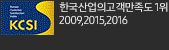

<div class="footer-wrap">
	<div class="footer-etc">
		<div class="footer-inner">
			<!-- 20180322 footer 변경 -->
			<ul class="ft-etc1">
				<li><a href="http://www.sktelink.co.kr/os_main.do" target="_blank" title="새창">회사소개</a></li>
				<li><a href="#">이용약관</a></li>			
				<li><a href="#">개인정보처리방침</a></li>
				<li><a href="#"><strong>개인정보이용내역조회</strong></a></li>
				<li><a href="#">통신자료제공사실 열람신청</a></li>
				<li><a href="#">이메일무단수집거부</a></li>
				<li><a href="#">책임의 한계와 법적고지</a></li>
				<li><a href="https://spam.kisa.or.kr/integration/main.do" target="_blank" title="새창">불법스팸대응센터</a></li>
				<li class="nobar"><a href="https://www.msafer.or.kr/index.do" target="_blank" title="새창">명의도용방지서비스</a></li>		
				<li><a href="#">해지미환급금 조회/환불</a></li>
				<li class="nobar"><a href="#">법인회선개통문의</a></li>			
			</ul>
			<!-- 20180321 삭제 
			<div class="ft-btn-area"><button type="button" class="btn-ac-arrow" id="uibtnFtmenu"><span class="hide">푸터 메뉴 열기</span></button></div> -->
		</div>
	</div>
	
	<div class="footer-con">
		<div class="footer-inner">
			<div class="ft-menu">
				<a href="http://www.sktelink.com" target="_blank" title="새창" class="footer-logo"><span class="hide">SK텔링크</span></a>
				
				<!-- 20180321 삭제
				<h2 class="only-m">사업자정보</h2>
				<button type="button" class="btn-ac-arrow" id="uibtnCompany"><span class="hide">사업자정보 열기</span></button> -->
			</div>

			<div class="footer-context">
				<p class="telinfo">
					<span>휴대폰 구매관련문의 : <em>1599-3508(유료)</em></span> <span>운영시간 : <em>평일 10:00~18:00 (휴일 및 공휴일 제외)</em></span>
				</p>
				<p class="address">
					<span>(04637) 서울특별시 중구 퇴계로24 (남대문5가) SK남산빌딩</span> <span>대표이사 : 김선중</span> <span>사업자번호 : 104-81-43391</span>
				</p>
				<a href="https://www.ftc.go.kr/www/bizCommList.do?key=232" target="_blank" title="새창">통신판매업신고</a>
				<a href="#" target="_blank" title="새창" class="wamark"></a>
			</div>
			<div class="footer-copyright">
				<p class="copyright">Copyright&copy; SK TELINK CO.LTD. All rights reserved.</p>
				<a href="https://www.facebook.com/SK%EC%95%8C%EB%9C%B0%ED%8F%B0-7mobile-1244570282224002/" target="_blank" title="새창열림" class="facebook"><span class="hide">페이스북 바로가기</span></a>
			</div>
			<ul class="footer-site">
				<li></li>
				<li></li>
				<li></li>
				<li></li>
				<li></li>
				<li></li>
			</ul>
		</div>
	</div>
</div>